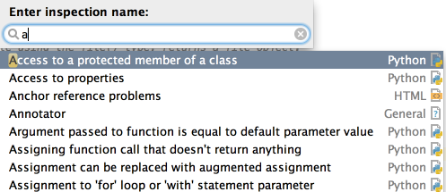

To quickly find and run an inspection, press &shortcut:RunInspection; and start typing the name of the inspection or its group. Choose the desired inspection from the suggestion list:

Then specify the desired scope.